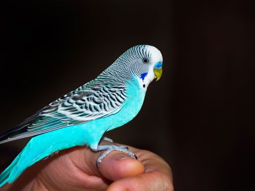
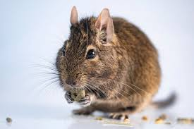

¡Me presento, Soy Jimena! Una amante incondicional de los animales. Desde pequeña, siempre he sentido
una conexión especial con ellos. En mi casa, tengo un perro llamado Max, que es mi compañero de aventuras. Me encanta llevarlo
al parque donde jugamos a la pelota y corremos juntos. Además, disfruto mucho de aprender sobre diferentes especies y sus
comportamientos. Siempre que puedo, visito refugios de animales para ayudar y, por supuesto, para jugar con ellos.
Para mí, los animales son una fuente inagotable de alegría y amor.

¡Me presento, Soy Alberto! Y mi pasión por los animales no tiene límites. Desde que era niño, he estado
rodeado de mascotas; crecí con gatos y siempre he encontrado en ellos una compañía única. Me fascina observar cómo cada uno
tiene su propia personalidad. Además, me dedico a la fotografía de vida silvestre en mis ratos libres. Capturar esos momentos
mágicos en la naturaleza me permite apreciar aún más la belleza de los animales en su hábitat. Estoy comprometido con la
conservación y trato de hacer mi parte para proteger el medio ambiente.

¡Me presento, Soy Diego! Mi amor por los animales me ha llevado a estudiar biología.
Siempre he sentido una atracción por los animales, tanto domésticos como salvajes. Me encanta visitar zoológicos
y acuarios, donde puedo aprender más sobre sus hábitos y hábitats. Recientemente, he comenzado a colaborar con una
organización que trabaja en la rehabilitación de aves. Es increíble ver cómo, con un poco de cuidado y dedicación,
podemos ayudar a estas criaturas a regresar a la naturaleza. Para mí, cada animal tiene una historia que contar, y me
apasiona ser parte de esa historia.